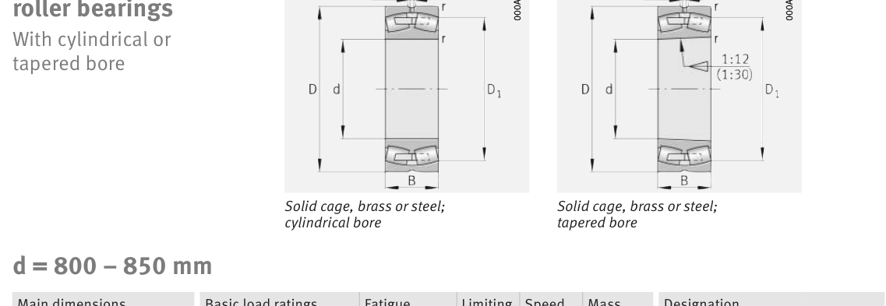

Original catalogue drawing - FAG Schaeffler HR 1, page 744

Scanned from the manufacturer catalogue page listing this part number. All part numbers printed on that table share the same drawing.
Scale cross-section
Blue = inner / outer ring, yellow = rolling element. Drawn to scale from this part's own
dimensions for selection reference only - not a manufacturing or assembly drawing.
Dimension table (mm / inch)
Symbol
Dimension
mm
inch
d
Bore diameter
800
31.4961
D
Outside diameter
1060
41.7323
B
Inner-ring / bearing width
258
10.1575
r
Chamfer (min)
6
0.2362
Notes
Weights are given in kg. Load ratings are shown in both the original catalogue units and the converted value (1 N = 0.2248 lbf). Data is provided for selection reference only - confirm against the latest official catalogue before ordering.
Main dimensions
Bore d (mm)
800
Outside dia. D (mm)
1060
Width B (mm)
258
Inner-ring shoulder dia. D1 (mm)
978.6
Load ratings & speeds
Basic dynamic load rating Cr (lbs)
1731029
Basic static load rating Cor (lbs)
4563622
Basic dynamic load rating Cr (N)
7.7e+06
Basic static load rating C0r (N)
2.03e+07
Fatigue limit load Cur (N)
1.36e+06
Factor e
0.23
Factor Y0
2.92
Limiting speed nG (rpm)
480
Reference speed nB (rpm)
133
Weight
Weight (kg)
639.0
Mounting dimensions (fillets / shoulders)
Housing fillet r max (mm)
6
Shaft shoulder da (mm)
823
Housing shoulder Da (mm)
1037
Housing fillet ra max (mm)
5
Bearing life (ISO 281 basic rating life)
C / P
Equivalent load P (N)
L10 (106 rev)
L10h at 100 rpm
4
1,925,000
102
16,932
6
1,283,333
392
65,416
8
962,500
1,024
170,667
10
770,000
2,154
359,072
15
513,333
8,323
1,387,244
Basic rating life per ISO 281: L10 = (C/P)10/3 with C = 7,700,000 N. Hours = L10 x 106 / (60n). Life-modification factors for lubrication, contamination and temperature (aISO) are not included.
Source & traceability
Brand
FAG
Source catalogue
FAG / Schaeffler Rolling Bearings HR 1
Catalogue page
p.744 (dimensions)
Load ratings in newtons, fatigue limit load Cur, limiting speed nG and reference speed nB.
Send us the quantity you need and we will come back with price and
lead time, normally within 24 hours. Equivalent parts from other brands can be quoted at the same time.